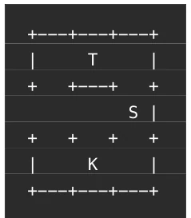
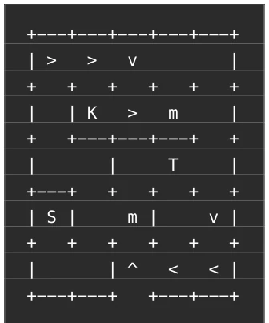

This paper casts a cold shower on LLMs, directly stripping the fig leaf of "world models". Author Alexey Potapov created a grid maze benchmark called AGI Maze, specifically testing Agent's state representation capability under partial observability. Simply put, it is letting LLMs find paths when they cannot see the full map. Results are stark: Vanilla LLMs are basically "artificial stupidity", can't even handle 3x3 simple mazes, some models even worse than random walk baselines. Although adding a "write notes" prompt engineering trick can improve scores a bit, it is far from human level. This framework is quite interesting, removes pixel interference, hits the pain point directly: LLMs really do not build environment state representation internally. However, pure text interaction mazes are still a bit far from real embodied intelligence, after all no vision no physics engine. But as a diagnostic tool, it indeed exposes fundamental defects in LLMs regarding spatial reasoning and long-term memory, worthy of warning for embodied intelligence researchers.
The core motivation lies in the fact that LLMs are essentially static predictors, good at completing text patterns, but not good at maintaining persistent states of the external world [1]. In partially observable, state-dependent environments, LLM "reasoning" often fails, because Next-token prediction encourages extracting immediate information rather than maintaining stable representations. Existing benchmarks like ARC-AGI-3 [7] although test generalization, are mostly fully observable, not testing localization, mapping, and long-range memory. In the embodied AI field, VLA models [9] can learn short sequence actions, but cannot solve SLAM problems (localization and mapping), cannot navigate back to specific locations when needed. AGI Maze aims to fill this gap, testing Agent's ability to reconstruct environment descriptions and maintain belief states under partial observability, rather than merely discovering rules. It strips away low-dimensional perception complexity, focusing on state representation and reasoning bottlenecks, providing standards for evaluating real-world modeling capabilities required for AGI.
The framework core is a lightweight grid environment, Agent moves on 3x3 to 8x8 grids, actions include up, down, left, right. Environment contains walls, indestructible boundaries (Monolith), treasure, and keys. Key constraints are: hitting wall does not move but consumes steps, taking treasure needs key, exiting maze needs treasure. To increase partial observability difficulty, dynamic mechanisms are introduced: rivers (force downstream movement, direction unknown) and pit loops (teleport to next pit). This forces Agent to infer position rather than rely on local observation. Framework provides HTTP API, including GET /api/description to get rules, POST /api/start to initialize game and return step budget, POST /api/step to send action and receive text observation and inventory status. Tasks are divided into five categories: Tutorial (teaching), Training (small mazes), Classic (core rule large mazes), Extended (new mechanism test generalization), Hidden (private hidden set, anti-overfitting). Hidden set contains unknown new items and cell types, Agent needs to infer rules from interaction. Baseline experiments compared Vanilla LLM (relying only on prompt history) and Planning Agent (using message history as working memory to write notes). API returns text observation and structured data, Agent needs to build map or track position through reasoning.

Figure 1. 3x3 maze example: S - start, K - key, T - treasure

Figure 2. A difficult maze (<, V, >, ^ – river cells, m – river mouth)
Experiments tested multiple lightweight LLMs (GPT-4o Mini, GPT-5 Mini, Gemini 3.1 Flash Light, MiniMax M2.7) on Training set performance. Results show, Vanilla LLM cannot reliably solve simple mazes, some models even worse than random walk baselines. For example on 5x4 maze, most models success rate is 0. After introducing "write notes" Planning Agent, strong models (GPT 5.5, Gemini 3.5 Flash) success rate significantly improved (e.g., 30% to 60%), but weak models still no improvement. This indicates LLM internal lacks explicit state representation, needs externalized memory. Step budget limits (human-calibrated thresholds) further exposed planning capability deficiencies, used two step thresholds, lower threshold is human-calibrated soft threshold, upper threshold is two times lower threshold. Conclusion is LLM in partial observability spatial reasoning and long-term memory mechanisms exist fundamental defects, simply relying on text history insufficient to build reliable world model.